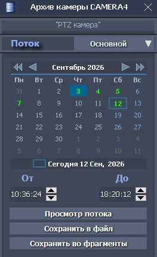
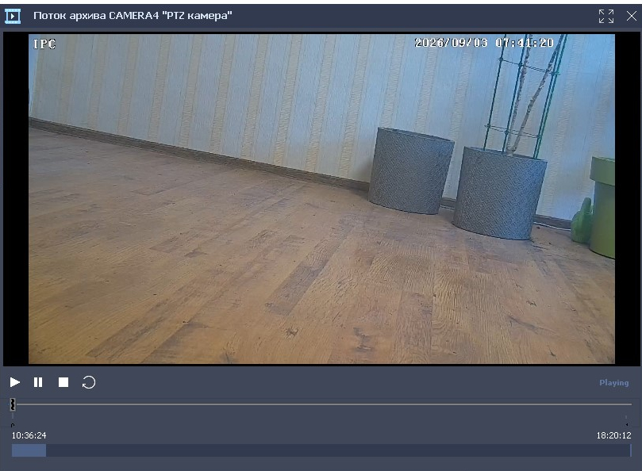
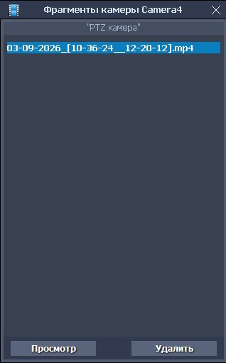
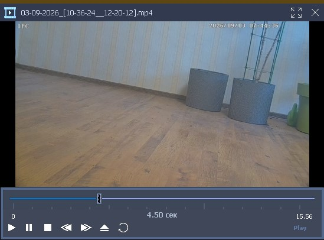

Архив и фрагменты
Архив и фрагменты
Форма для работы с удаленным архивом камеры вызывается из контекстного меню, для выбранной камеры. Одновременно можно работать с несколькими архивами камер.

На этой форме можно выбрать:
- требуемый поток записей, из выпадающего списка «Поток»;
- требуемую дату и диапазон времени (От-До), архивных записей.
На календаре формы выделяются (зеленым цветом) дни, содержащие архивные записи, для выбранного потока.
Найденные записи могут быть сохранены в видео файл на диск (кнопка «Сохранить в файл») или в избранные видео фрагменты (кнопка «Сохранить во фрагменты»). Формат сохраняемых файлов - .mp4.
Для камер, производящих запись в архив со звуком, все сохраняемые видео файлы, также будут содержать звуковую дорожку.
Поток найденных записей может быть просмотрен в потоковом архивном плеере, вызываемый по нажатию на кнопку «Просмотр».

Потоковый архивный плеер предназначен только для просмотра потока выбранных архивных записей. На форме отображаются:
кнопки управления проигрыванием: Play (Играть), Pause (Пауза), Stop (Стоп), Loop (Цикл);
активный, управляемый мышью слайдер;
графическая панель, с отображением распределения файлов в архиве в заданном временном интервале.
Сохраненные видео фрагменты, отображаются в виде списка на форме фрагментов, вызываемой из контекстного меню, для выбранной камеры

Выбранный в списке фрагмент, может просмотрен (кнопка «Просмотр») во встроенном видеоплеере или удален (кнопка «Удалить»).

Видеоплеер содержит: активный слайдер, c отображением временных меток и кнопки управления проигрыванием: Play (Играть), Pause (Пауза), Stop (Стоп), Forward (Вперед), Backward (Назад), Номе (В начало), Loop (Цикл).